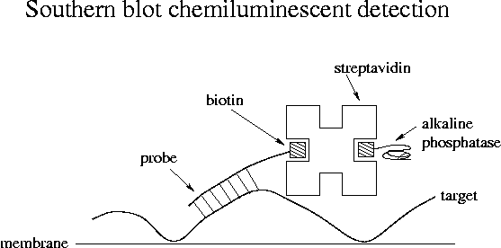

Day 13 Morning Lecture Notes
Steve Williams, Smith College
June 18, 2004

Microarray analysis studies global gene expression as opposed to studying one or a few genes at a time using RT-PCR or quantitative PCR. With whole genomes sequenced, the function of genes need not be known in advance in order to study their expression. For example, all the genes involved in diabetes or aging can be studied.
In order to make a microarray, a researcher must start with the genome sequence or expressed sequence tag (EST) data. Many genes can be identified quickly from a cDNA library. It may be desirable to use a library from all the major organs or from each stage of development. Select thousands of cDNA clones at random and perform a simple one-pass sequencing. If the cDNAs are cloned in Lambda Zap II, the inserts can be amplified using the T3 and T7 primers. Use the T3 primer to duplicate one strand of 600-800 nt. The resulting structure is called an EST, a "tag" because it's not the complete sequence. The set of ESTs contains the partial sequence of the full set of cDNA clones.
Perform an analysis on the ESTs and group them into clusters with similar sequences. The sequences are often different overlapping reads from the same cDNA. The goal of cluster analysis is to eliminate redundant sequences. TIGR has an efficient algorithm for performing cluster analysis.
Human microarrays are commercially available. Microarrays for a particular organ or an unusual organism have to be made by the researcher.
The next step is to produce unique oligos for each cluster. The oligos must be designed to hybridize to only one cluster and not to hybridize to each other. In addition, the oligos must have similar Tm's. They usually need to be 65-70 bp in length in order to be sufficiently specific. Two genes that are very similar may not support unique oligos. 3500 oligos for an array cost $40,000 at the beginning of 2004, representing a huge computational and synthetic effort. Instead of producing oligos, cDNAs can be spotted on microarrays instead, but precise metering of oligos is also expensive. Frozen oligos last nearly forever. A sufficient quantity is made at one time to last for thousands of arrays. The shelf life of fully prepared arrays is about 6 months.
NCBI has the dbEST database that includes data from hundreds of species. Eukaryotic genomes that are completely sequenced include human, mouse, C. elegans, Drosophila and Arabidopsis. Humans have millions of ESTs.
An alternative to the EST approach is to use an existing genome sequence. Exons can be identified by comparing a cDNA sequence to the genomic sequence. Otherwise eukaryotic genes are hard to find. Gene finder programs look through sequence data and look for open reading frames, promoters, etc. The programs are not very reliable, which is why the number of human genes is still not known.
In the absence of a cDNA, it's hard to tell if a putative gene is real. 2/3 of human genes are known based on EST data. Pseudogenes are common due to duplication. There is one pgk pseudogene which is 80% similar to pgk1 while pgk1 and pgk2 are 90% similar. Pseudogenes occur because mutations in a second, untranscribed copy of a gene may not be deleterious. Some duplicate genes are functional, e.g. ribosomal RNA, which is needed in huge quantities. An oligo may be designed from a pseudogene and used to screen a cDNA library.
Arrays made from genomic sequences will contain some oligos for pseudogenes. In contrast arrays made from ESTs may be less complete but only contain real genes. Affymetrix synthesizes multiple shorter oligos per site on-chip using photolithography. Other companies used needles or inkjets to dispense the oligos. Affymetrix arrays contain both known genes and predicted ones. 50,000 oligos can be spotted onto a 1 cm2 array.
How are microarrays used? Hybridize them with cDNAs produced from mRNAs from the cells of interest. For example, compare gene expression in normal breast tissue to cancerous tissue. Include a red label in the cDNA of one tissue type and a green label in the cDNA of the other. Hybridize the labeled cDNAs to two arrays. A confocal laser-scanner then images the fluorescence. The photos with multiple colors are overlays of two separate color images. The green dye is Cy3 and the red is Cy5. Run both tissues with both dyes as a consistency check; this method is called a "dye flip." Most genes will be expressed equally in the two tissues. The genes of interest are those that are expressed differently. Perform a follow-up study on these genes using RT-PCR.
Note that the cDNAs used in microarray studies come from reverse transcription, not RT-PCR. Small microarrays may be more suitable for some studies just because they require less cDNA. The amount of oligo needed depends on the probability of the molecule binding in a bioactive orientation. 200 ng of total RNA is needed for a typical array. The Agilent Bioanalyzer can be used to measure total RNA concentration. Nylon-membrane arrays can be used for studies involving only hundreds of oligos.
In the future microarrays may be used to study proteins and small molecules. For example, with a protein array, the binding of proteins to one another could be studied.
Allele arrays can also be used for population studies. One oligo can be for the common SNP and one can be for the disease state. Spot down different patients' DNA on arrays to study. Alternatively make an array of oligos each with a different SNP that can cause a given disease.
Up Previous Next